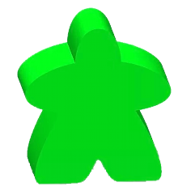
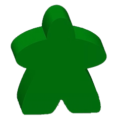
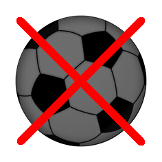
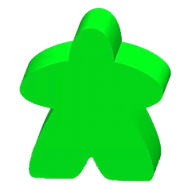
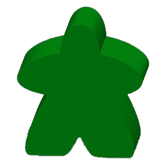
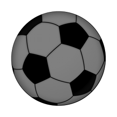

Aspic : règle du jeu et utilisation
Bienvenue sur la page du jeu Aspic.
Vous trouverez ici des informations sur la WebApp et l'application pour tablette.
Menu principal
Description du jeu
Le plateau de jeu où se déroulent toutes les actions est un rectangle de 99 cases (11×9).


Figure 1 et 2 : Exemples de choix de couleurs de pions
Chaque camp choisit un côté (gauche/droite) et une couleur de pion (voir ci-dessous) pour toute la durée d'une partie (il n'y a donc pas de changement de côté).

Figure 3 : Choix possibles de couleurs de pions
Selon la couleur choisie par camp, le fond du plateau de jeu est adapté (voir les deux exemples précédents).
Le plateau de jeu est composé de :
- Deux zones libres (colonnes B à E pour le camp de gauche et colonnes G à J pour le camp de droite) qui sont les zones sur lesquelles doivent être posés les pions avant l'engagement (au début d'une manche ou après un but).
- Une zone neutre au centre (colonne F) sur laquelle est posée le pion-ballon à l'engagement.
- Deux zones de défense (colonnes A pour le camp de gauche et colonne K pour le camp de droite) sur lesquelles seuls les pions du camp correspondant peuvent pénétrer sauf sur la zone de but (lignes 4 à 6) quadrillée par des filets.
- Deux lignes de but (situées entre les colonnes A et B pour le camp de gauche et entre les colonnes J et K pour le camp de droite).
Chaque camp doit avoir six pions (par défaut mais il est possible de jouer avec cinq ou sept pions, voir Paramètres de jeu). Il n'y a qu'un seul pion-ballon.
Règle du jeu
L'objectif est de marquer le plus de buts, c'est-à-dire porter le plus grand nombre de fois le pion-ballon au delà de la ligne de but en la croisant entre les lignes 4 et 6 incluses (entre les poteaux).
Une partie se joue en deux manches de 50 tours (par défaut mais il est possible de jouer en 2×25, 2×10 et 2×5 tours, voir Paramètres de jeu).
Le camp de gauche engage la première manche et commence chacun des tours suivants.
Le camp de droite engage la deuxième manche et commence chacun des tours suivants.
Phases de jeu
Un tour de jeu peut inclure plusieurs phases de jeu dans cet ordre uniquement :
Contraintes :
- La pose de pions se déroule uniquement au début d'une manche ou après un but.
- Le tour peut comprendre un déplacement de joueur et un tir dans cet ordre mais doit comprendre au moins l'une des deux phases (un déplacement ou un tir).
- Au cours d'un même tour, le pion déplacé ne peut être le pion-tireur.
Pose des pions
Au début de la partie ou de la deuxième manche, chaque joueur doit poser un pion à tour de rôle.
Le joueur qui n'engage pas le jeu pose le premier pion, puis l'adversaire pose son premier pion et ainsi de suite de telle sorte que le joueur qui engage est le dernier à poser un pion.
Ainsi, au début de la première manche, le joueur de droite pose le premier un pion et le joueur de gauche est le dernier à poser un pion avant d'engager le jeu par un déplacement et/ou un tir.
Au début de la deuxième manche, c'est l'inverse : le joueur de gauche pose le premier un pion et le joueur de droite est le dernier à poser un pion avant d'engager la deuxième manche.
Les pions doivent obligatoirement être posés sur la zone libre du côté du camp qui pose le pion.
La zone libre du camp de gauche se trouve entre les colonnes B et E.
La zone libre du camp de droite se trouve entre les colonnes G et J.
Déplacement d'un pion
Voici les conditions à respecter lors du déplacement d'un pion :
- Il pion ne peut être déplacé qu'horizontalement, verticalement ou en diagonale jusqu'à trois cases maximum.
- Il ne faut pas qu'il y ait de pions sur la trajectoire du déplacement (entre le pion à déplacer et la case destination incluse).
- Il ne peut jamais aller, ni sur une zone de but, ni sur la zone de défense adverse :
- Un pion du camp de gauche ne peut aller, ni sur la colonne K, ni sur la colonne A entre les lignes 4 et 6.
- Un pion du camp de droite ne peut aller, ni sur la colonne A, ni sur la colonne K entre les lignes 4 et 6.
Voici un premier exemple de déplacements possibles (coches vertes) d'un pion du camp de gauche (les verts) depuis sa zone libre :

Figure 4 : Choix possibles de cases cibles du déplacement d'un pion depuis sa zone libre
Voici un deuxième exemple de déplacements possibles d'un pion du même camp mais depuis la zone libre adverse :

Figure 5 : Choix possibles de cases cibles du déplacement d'un pion depuis la zone libre adverse
Tir
Le tir consiste dans un premier temps à désigner un de ses pions comme tireur. Voici les conditions à remplir pour pouvoir réussir un tir :
- Le pion-tireur ne peut être le pion qui vient d'être déplacé au cours du même tour.
- Le pion-tireur doit être au plus à trois lignes et trois colonnes du pion-ballon.
- Le tir en arrière est interdit donc le pion-tireur ne doit pas être situé après le pion-ballon par rapport à la direction vers le but adverse.
- Si la direction pion-tireur/pion-ballon est cardinale (c'est-à-dire horizontale, verticale ou en diagonale), alors il ne doit y avoir aucun pion entre le pion-tireur et le pion-ballon et entre le pion-ballon et sa case destination (voir détermination de celle-ci au paragraphe suivant).
- Si la direction pion-tireur/pion-ballon n'est pas cardinale, seule la case destination du pion-ballon doit être vide.
Dans l'exemple qui suit, les verts tirent. Le pion-tireur doit se trouver dans la zone bleue. Les pions vert clair peuvent tirer. Le pion vert foncé ne le peut pas : un pion adverse est sur la trajectoire, juste devant le pion-ballon.

Figure 6 : Zone de tir possible
Case destination du pion-ballon
La case du pion-ballon est le centre du segment pion-tireur/future case du pion-ballon si le segment pion-ballon/future case du pion-ballon ne coupe pas un bord latéral ou une ligne de but. Si le trajet du pion-ballon coupe un bord latéral ou une ligne de but, il y a rebond ou but.
Si l'on reprend l'exemple précédent, voici où se trouverait le pion-ballon si l'un des deux pions vert clair tirait. Les lignes jaunes matérialisent l'axe Tireur/Ballon/Future case.

Figure 7 : Cases destinations du pion-ballon
Pour aider à trouver la case destination du pion-ballon, il faut compter les lignes et les colonnes qui séparent le pion-tireur du pion ballon d'une part (chiffres en jaune sur la figure 7), et les répéter depuis le pion-ballon pour trouver sa case destination (chiffres en bleu).
Rebond ou but ?
Plusieurs cas peuvent se présenter :
- Si le trajet du pion-ballon coupe le bord latéral, il y a rebond.
- S'il coupe la ligne de but adverse sur la ligne 4, 5 ou 6, il y a but sinon rebond.
- S'il coupe la ligne de but exactement entre les lignes 3 et 4 ou entre les lignes 6 et 7, il y a rebond (le pion-ballon « tape le poteau »).

Figure 8 : Tir et rebond sur le poteau
Déplacement des pion-tireur et pion-ballon
Une fois déterminée la future case du pion-ballon, le tir peut être effectué :
- Le pion-tireur remplace le pion-ballon.
- Le pion-ballon est déplacé sur sa case destination.

Figure 9 : Phase de tir
Rebond latéral
Il y a rebond latéral quand le trajet du pion-ballon croise le bord gauche ou droit du plateau de jeu (au-delà des lignes 1 et 9).

Figure 10 : Tir avec rebond latéral
Lors du décompte du nombre de colonnes séparant le pion-ballon de sa future case, il faut revenir en arrière au moment d'atteindre le bord latéral : exemple sur la figure 10 avec le chiffre 3 en bleu.
Rebond sur la ligne de but
Il y a rebond sur la ligne de but quand le trajet du pion-ballon croise la ligne de but adverse (entre les colonnes A et B pour le camp de droite et entre les colonnes J et K pour le camp de droite).

Figure 11 : Tir avec rebond sur la ligne de but
Lors du décompte du nombre de lignes séparant le pion-ballon de sa future case, il faut revenir en arrière au moment d'atteindre la ligne de but : exemple sur la figure 11 avec les chiffres 2 et 3 en bleu.
Double rebond
Il y a double rebond quand le trajet du pion-ballon croise la ligne de but adverse et un des bords latéraux.

Figure 12 : Tir avec double rebond
Permutation tireur-ballon
Dans certains cas de figure, le tir a pour résultat la permutation des pion-tireur et pion-ballon. Voici les conditions à remplir :
- Le pion-ballon doit être contre la ligne de but adverse ou contre un bord latéral.
- Si le pion-ballon est...
- contre un bord latéral, le pion-tireur doit être sur la même colonne et aucun pion ne doit être entre le pion-tireur et le pion-ballon.
- contre la ligne de but adverse, le pion-tireur doit être sur la même ligne et aucun pion ne doit être entre le pion-tireur et le pion-ballon.
- dans un des coins de la zone libre adverse, aucun pion ne doit être entre le pion-tireur et le pion-ballon si la direction pion-tireur/pion-ballon est cardinale.


Figures 13, 14 et 15 : Tirs avec permutations latérale, sur la ligne de but et dans le coin
But marqué
Voici trois exemples :
- Les violets tirent et marquent...
- Les bleu ciel tirent et marquent...
- Les bleu ciel tirent mais ne marquent pas : il y a double rebond !


Figures 16, 17 et 18 : deux buts et un rebond
Remarques :
- Il n'est pas possible de contrer ces deux buts.
- Il n'est pas possible de marquer un but avec un rebond.
Commandes de jeu
Toutes les commandes de l'application sont accessibles via des boutons dans la zone de message de chaque côté des deux camps.
Les commandes liées aux phases de jeu sont également accessibles sur le terrain selon la situation des phases de jeu.
Démarrer ou reprendre une partie
Au lancement de l'application, vous avez accès au menu principal :

Figures 19 : menu principal
Pour débuter une partie, vous avez deux choix :
- Si une partie a été interrompue, choisissez CONTINUER LA PARTIE pour la reprendre au moment précis où elle a été interrompue.
- Pour en commencer une nouvelle, choisissez NOUVELLE PARTIE. Si une partie a été sauvegardée, elle sera perdue dès que les deux camps auront choisi leurs couleurs.
Choix du côté et des couleurs
Dès que vous avez choisi NOUVELLE PARTIE, on vous propose huit couleurs de pions.
Les deux joueurs choisissent d'abord un côté (gauche ou droite) puis une couleur de camp parmi celles-ci :
Figure 20 : Choix possibles de couleurs de pions
Certaines couleurs ne peuvent pas être choisies l'une contre l'autre pour des risques de confusion :

Figure 21 : Oppositions de couleurs de pions impossibles
Dès que les deux camps ont choisi une couleur, la partie peut commencer par la pose des pions.
À ce stade, toute sauvegarde de partie est perdue.
Pose des pions
La pose de pions a lieu en début de manche ou après un but.
C'est l'adversaire de celui qui engage qui pose le premier pion afin que celui-ci pose le dernier pion et engage le jeu.
À tour de rôle, chaque camp pose un pion-joueur.
Pour poser pion, il suffit de toucher une des cases de la zone libre de son camp (zones colorées) :

Figure 22 : Zones libres où l'on doit poser les pions
Le pion-ballon est posé au centre du terrain avant l'engagement du jeu.
Déplacement d'un pion
Le déplacement du pion est la première phase de jeu après l'éventuelle pose des pions.
Il n'est possible de passer le déplacement d'un pion que si un tir est possible. Dans ce cas ce dernier est obligatoire.
Si le tir n'est pas possible, le déplacement est alors obligatoire (toujours possible).
Selon la situation :
- S'il est possible d'ignorer le déplacement, le bouton PASSER vous est alors proposé :

Figure 23 : Tour de déplacement de pion avec possibilité de passer
- Si le tir n'est pas possible, le bouton PASSER ne vous est pas proposé :

Figure 24 : Tour de déplacement de pion obligatoire
Pour effectuer le déplacement, il faut choisir le pion à déplacer puis la case destination.
Dès que vous avez choisi le pion à déplacer, celui-ci est obscurci :
 
Figure 25 : Le pion déplacé est obscurci
Vous pouvez annuler le choix du pion à déplacer en touchant ANNULER :

Figure 26 : Choix de la case destination d'un déplacement
Actions sur le terrain
Vous pouvez également :
- Passer le déplacement en touchant le pion-ballon (bouton PASSER).
- Annuler le choix du pion en touchant le pion-joueur déplacé (bouton ANNULER).
Tir
Le tir est la deuxième phase de jeu après le déplacement de pion :
- Si le déplacement de pion a été passé, le tir est obligatoire sinon il peut être passé.
- Si le tir n'est pas possible, le tour passe à l'adversaire et le tir n'est même pas proposé.
- Depuis la version 1.1, un mode test est proposé en appuyant sur le bouton TESTER.
Selon la situation :
- S'il est possible d'ignorer le tir, le bouton PASSER vous est alors proposé :

Figure 27 : Tour de tir avec possibilité de passer
- Si le déplacement n'a pas été effectué, le bouton PASSER ne vous est pas proposé mais vous pouvez revenir à la phase de déplacement en touchant ANNULER :

Figure 28 : Tour de tir obligatoire
Mode test
En mode test, vous pouvez toucher un pion-tireur pour voir pendant quelques secondes le résultat sans jouer le coup.
Le message suivant vous permet de savoir si vous êtes en mode test :

Figure 29 : Mode test de tir
Appuyer sur ANNULER permet de sortir du mode test.
- Si le tir est valide sans qu'un but ne soit marqué, les cases finales du tireur et du ballon sont respectivement remplacées par les pion-tireur et pion-ballon pendant quelques secondes.
- Si le tir est valide et qu'un but est marqué, le mot But! sera affiché sur le pion-ballon
 pendant quelques secondes.
pendant quelques secondes.
- Dans les cas suivants, aucun changement n'apparaît sur le terrain :
- Si le pion est trop éloigné, le message PION HORS DE PORTEE s'affiche.
- Si vous choisissez un pion advere ou une case vide, le message CHOIX INCORRECT s'affiche.
- Si vous choisissez le pion qui vient d'être déplacé dans le même tour, le message PION DEPLACE NON TIREUR s'affiche.
- Si vous choisissez un pion sur une ligne située après celle du pion-ballon, le message TIR EN ARRIERE INTERDIT ! s'affiche.
- Dans les cas suivants, un ballon barré  s'affiche à la place du pion-ballon pendant quelques secondes :
- Si un pion est situé sur la trajectoire, le message TRAJET OCCUPE s'affiche.
- Si la case finale du pion-ballon est occupée, le message CASE FINALE OCCUPEE ! s'affiche.
- Si les cases finales tireur et ballon sont identiques, le messag MEME CASE TIREUR + BALLON s'affiche.
Actions sur le terrain
Vous pouvez également :
- passer le tir en touchant le pion-ballon (bouton PASSER).
- revenir à la phase de déplacement en touchant le pion-ballon (bouton ANNULER).
- Sortir du mode test en touchant pion-ballon (bouton ANNULER) depuis la version 1.1.
Paramètres de jeu
Il y a trois paramètres de jeu modifiables :
- Le nombre de pions par joueur,
- Le nombre de tours par manche,
- Le temps par tour et par joueur (depuis la version 1.1).
Les paramètres d'une partie en cours ne sont pas modifiables. Les changements éventuels seront appliqués lors d'une nouvelle partie.
Informations affichées :
- Les paramètres affichés après « ACTUELLEMENT : » sont les paramètres de la partie en cours ou des derniers paramètres avant changement si aucune partie n'est entamée (non modifiables).
- Le temps affiché entre parenthèses dans le menu PARAMETRES est la durée maximale d'une partie avec les paramètres en vigueur (tours par partie et temps/tour/joueur).
Il équivaut à deux fois le nombre de tours par partie multiplié par le temps par tour par joueur.
Le temps maximal de jeu pour chaque joueur est donc de la moitié du temps maximal d'une partie.
Dans l'exemple des figures 31, 34 et 37, on a une partie maximale de 18 minutes (2×5 × 54" × 2 = 1080" = 18'). Le temps de jeu imparti par joueur est donc de 9'.
Nombre de tours par partie
Par défaut, une partie dure 2×50 tours. Il est possible de jouer à 2×5, 2×10 ou 2×25 tours.
Pour changer ce paramètre, au lancement de l'application il faut choisir PARAMETRES DE JEU puis TOURS PAR PARTIE.


Figures 30, 31 et 32 : changement des paramètres de tours par partie
Nombre de pions par joueur
Par défaut, chaque joueur a six pions. Il est possible de jouer à cinq ou sept pions.
Pour changer ce paramètre, au lancement de l'application il faut choisir PARAMETRES DE JEU puis PIONS PAR JOUEUR.

Figures 33, 34 et 35 : changement des paramètres de pions par joueur
Temps par tour et par joueur
Par défaut, chaque joueur a 36 secondes de temps de jeu par tour en moyenne. Il est possible de jouer de 18 à 54 secondes par tour.
Pour changer ce paramètre, au lancement de l'application il faut choisir PARAMETRES DE JEU puis TEMPS/TOUR/JOUEUR.

Figures 36, 37 et 38 : changement des paramètres de temps/tour/joueur
Ce temps de jeu doit être multiplié par deux fois le nombre de tours par manche pour avoir le temps de jeu maximal que chaque joueur bénéficie au cours d'une partie (colonnes TMJ dans le tableau ci-après).
Une partie peut donc durer au maximum deux fois le temps octroyé à chaque joueur (colonnes DMP dans le tableau ci-après).
Si un joueur dépasse le temps maximal par joueur (TMJ), la partie est terminée et l'adversaire remporte le match quel que soit le score.
| T/t/j* | Nombre de tours d'une partie |
|---|
| 2×5 | 2×10 | 2×25 | 2×50 |
|---|
| TMJ* | DMP* | TMJ* | DMP* | TMJ* | DMP* | TMJ* | DMP* |
|---|
| 18" | 3' | 6' | 6' | 12' | 15' | 30' | 30' | 1h |
| 27" | 4'30 | 9' | 9' | 18' | 22'30 | 45' | 45' | 1h30 |
| 36" | 6' | 12' | 12' | 24' | 30' | 60' | 1h | 2h |
| 45" | 7'30 | 15' | 15' | 30' | 37'30 | 1h15 | 1h15 | 2h30 |
| 54" | 9' | 18' | 18' | 36' | 45' | 1h30 | 1h30 | 3h |
(*) T/t/j = Temps par Tour par Joueur (paramètre de jeu) – TMJ = Temps Maximal par Joueur – DMP = Durée Maximale de la Partie.
Informations et statistiques
Les informations et statistiques sont affichées de part et d'autre du terrain entre les deux camps :
- En haut de l'écran sont affichés la situation des tours de jeu, la phase de jeu en cours ; et par camp le score et le temps restant.

Figure 39 : informations (haut)
- En bas de l'écran sont affichés l'occupation du terrain et par camp, la distance parcourue des pions-joueurs et du pion-ballon.

Figure 40 : statistiques (bas)
Score
En haut de l'écran, sont affichés deux gros chiffres dans la couleur des deux camps : il s'agit du score.
Il est augmenté de 1 après chaque but. Le camp qui marque le plus de buts a remporté la partie.

Figure 41 : score
Tours de jeu
En haut de l'écran au centre, est affiché le tour de jeu en cours exprimé en pourcents par rapport à l'ensemble de la partie.
Le premier tour est affiché 00%. La fin de partie représente 100%.

Figure 42 : Tour de jeu
Dans l'exemple ci-dessus :
- Si la partie est en 2×5 tours, 20% signifie 2ème tour.
- Si la partie est en 2×10 tours, c'est le 3ème tour.
- Si la partie est en 2×25 tours, c'est le 11ème tour.
- Si la partie est en 2×50 tours, c'est le 21ème tour.
La couleur indique le camp en action.
Phases de jeu
En haut de l'écran de part et d'autre du nombre de tours, est affiché la phase de jeu en cours, du côté du camp en action.
  
Figure 43 : Phases de jeu (pose des pions, déplacement, tir et mode test de tir)
Est affiché :
- un pion-joueur si la phase en cours est une pose de pions,
- un pion-joueur obscurci s'il s'agit d'un déplacement de pion (choix du pion et choix de la case destination),
- un pion-ballon s'il s'agit d'un tir,
- un pion-ballon obscurci s'il s'agit d'un test de tir (depuis la version 1.1).
Le côté d'affichage (par rapport au nombre de tours) et la couleur indiquent le camp en action : sur la figure 39, il s'agit de la phase de déplacement des orange.
Temps restant
Depuis la version 1.1, le temps écoulé est remplacé par le temps restant (compte à rebours) ce qui entraîne la fin de la partie quand ce dernier arrive à zéro et la perte automatique du match pour le joueur concerné.
En haut de l'écran du côté de chaque camp, le temps restant est affiché en heures, minutes et secondes.
Le temps s'écoule pour le joueur en action dans les phases de pose de pions, de déplacement d'un pion, de tir et de test de tir.

Figure 44 : Temps restant par camp
Occupation du terrain
En bas de l'écran au centre, est affiché l'occupation du terrain exprimée en pourcents par rapport à la distance entre les deux zones de défense.
Il s'agit de la moyenne des positions du pion-ballon après chaque tour de jeu de chaque camp.

Figure 45 : Occupation du terrain
La couleur indique le camp qui a l'avantage de l'occupation du terrain (>50%).
Remarques :
- Un but correspond à 100% pour le camp qui a marqué.
- Le pion-ballon au centre du terrain (zone neutre) représente 50%.
Exemple de calcul d'occupation du terrain
Les violets engagent et positionnent le pion-ballon sur la colonne G (+1 colonne) puis les orange ripostent et placent le pion-ballon en D (-3 colonnes) :
- La première position du pion-ballon correspond à 60% pour les violets ou 40% pour les orange.
- La deuxième position du pion-ballon correspond à 30% pour les violets ou 70% pour les orange.
- L'occupation du terrain est donc de (60+30)/2 = 45% pour les violets ou 55% pour les orange. L'occupation du terrain afficherait donc 55% en orange.
En supposant que les violets ne puissent tirer et que les orange marquent :
- On ajoute aux 60 et 30, à nouveau 30 (le pion-ballon n'ayant pas bougé) et 0 (but pour les orange).
- L'occupation du terrain est donc de (60+30+30+0)/4 = 30% pour les violets ou 70% pour les orange. L'occupation du terrain afficherait donc 70% en orange.
Distance parcourue
En bas de l'écran du côté de chaque camp, est affiché la distance parcourue par les pions-joueurs et par le pion-ballon au cours de leurs tours de jeu.

Figure 46 : Distance parcourue par camp
La distance parcourue est exprimée en nombre de cases sachant qu'un déplacement de l lignes et c colonnes équivaut à  cases.
cases.
© Patrice Fouquet - Dernière mise à jour le 23 septembre 2018
Patquoi.fr - Envoyer un mail - Forum - App Store - Google Play - Amazon.fr